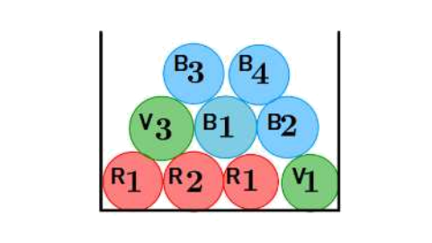
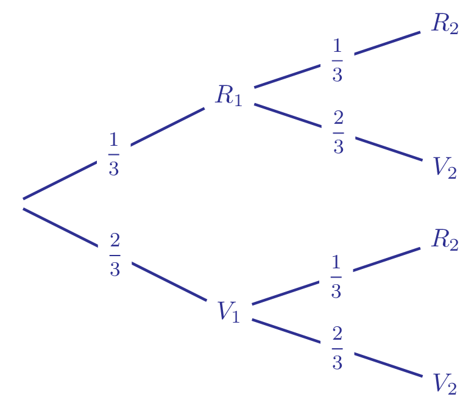

Indépendances
Notion d’indépendance
Définition :
Soit \(A\) et \(B\) deux événements d’un même univers de probabilités non nulles.
On dit que \(A\) et \(B\) sont indépendants lorsque
\[P(A \cap B) =P(A) \times P(B)\]
Exemple :
On considère un jeu de 32 cartes. On note \(A\) et \(B\) les événements Obtenir un as et Obtenir un coeur .
Démontrer que les événements \(A\) et \(B\) sont indépendants.
Afficher la correction
Les cartes étant indiscernables on est en situation d’équiprobabilité.
Puisqu’il y a quatre as dans le jeu et huit cartes à coeur, et un seul as de coeur, on a
\[P(A) = \frac{1}{4} \quad ; \quad P(B)= \frac{1}{8} \quad ; \quad P(A \cap B) = \frac{1}{32}\]
Ainsi
\[P(A) \times P(B) = \frac{1}{4} \times \frac{1}{8} = \frac{1}{32} = P(A \cap B)\]
Donc par définition les événements \(A\) et \(B\) sont indépendants.Remarque :
La notion d’indépendance et d’incompatibilité ne sont pas les mêmes et ne peuvent pas se réaliser en même temps.
En effet si \(A\) et \(B\) sont indépendants, alors
\[P(A \cap B) = P(A) \times P(B)\]
Or si \(A\) et \(B\) sont incompatibles \(P(A \cap B) = 0\).
Ainsi, on aurait \(P(A) = 0\) ou \(P(B) = 0\), ce qui est contraire à la définition d’indépendance de deux événements.
Exemple :
Soient \(A\) et \(B\) vérifiant \(P(A) =0,8\), \(P(B)= 0,35\) et \(P(A \cup B) =0,87\). Montrer que \(A\) et \(B\) sont indépendants.
Afficher la correction
On utilise l’égalité :
\[P(A \cup B) + P(A \cap B) = P(A) + P(B)\]
Donc
\[P(A \cap B) = P(A) + P(B) - P(A \cup B) = 0,8 + 0,35 - 0,87 = 0,28\]
Or
\[P(A) \times P(B) = 0,8 \times 0,35 = 0,28\]
On en déduit que
\[P(A \cap B) = P(A ) \times P(B)\]
Donc \(A\) et \(B\) sont indépendants.Théorème :
On considère \(A\) et \(B\) deux événements de probabilité non nulles.
On dit que \(A\) et \(B\) sont indépendants si et seulement si
\[P_A(B)=P(B)\]
Démonstration :
Soit \(A\) et \(B\) deux événements :
\[ A \text{ et } B \text{ indépendants } \Longleftrightarrow P(A \cap B) =P(A) \times P(B) \Longleftrightarrow P(B) = \frac{P(A \cap B)}{P(A)} \Longleftrightarrow P(B) = P_A(B)\]Comprendre la notion d’indépendance :
La propriété établit qu’il y a indépendance si et seulement si \(P(A)=P_B(A)\).
C’est-à-dire que la réalisation de l’événement \(B\) ne modifie en rien la probabilité de l’événement \(A\).
Théorème :
Si \(A\) et \(B\) sont deux événements indépendants, alors \(A\) et \(\bar{B}\) sont indépendants.
Démonstration :
Soient \(A\) et \(B\) deux événements indépendants, alors
\[P(A \cap B)= P(A) \times P(B)\]
De plus \(B\) et \(\bar{B}\) forment une partition de l’univers, donc
\[P(A) =P(A \cap B) + P(A \cap \bar{B})\]
Donc
\[P(A \cap \bar{B}) = P(A) - P(A)P(B) = P(A)(1-P(B))=P(A)P(\bar{B})\]
D’où le résultat.Exemple :
Dans l’urne ci-dessous, il y a des jetons numérotés de différentes couleurs.
- 4 jetons bleus : 1, 2, 3, 4
- 2 jetons verts : 1 et 3
- 3 jetons rouges : deux numérotés 1 et un numéroté 2

On tire au hasard un jeton dans cette urne.
On considère les évènements suivants :
- \(B\) : « le jeton tiré est bleu »
- \(I\) : « le numéro du jeton tiré est impair »
- Les évènements \(B\) et \(I\) sont-ils indépendants ?
Afficher la correction
Les jetons étant indiscernables au toucher, on est en situation d’équiprobabilité.
\[P(B)= \frac{4}{9}, \quad P(I) = \frac{6}{9} = \frac{2}{3}, \quad P(B \cap I) = \frac{2}{9}\]
Ainsi
\[P(B) \times P(I) = \frac{4}{9} \times \frac{2}{3} = \frac{8}{27} \neq \frac{2}{9} = P(B \cap I)\]
Donc les événements ne sont pas indépendants.On rajoute \(n\) jetons bleus numérotés « 1 » dans l’urne.
- Exprimer en fonction de \(n\), les probabilités \(P(B)\), \(P(I)\) et \(P(B \cap I)\).
Afficher la correction
\[P(B) = \frac{4+n}{9+n}, \quad P(I) = \frac{6+n}{9+n}, \quad P(B \cap I) = \frac{2+n}{9+n}\]
- Déterminer le nombre de jetons à rajouter pour que les événements \(I\) et \(B\) soient indépendants.
Afficher la correction
Les événements \(I\) et \(B\) sont indépendants si et seulement si
\[P(B \cap I) = P(B) \times P(I)\]
Or
\[\frac{4+n}{9+n} \times \frac{6+n}{9+n} = \frac{2+n}{9+n} \Longleftrightarrow (4+n)(6+n)=(2+n)(9+n)\]
\[\Longleftrightarrow 24+10n+n^2=18+11n+n^2 \Longleftrightarrow n=6\]
Ainsi, pour que les événements soient indépendants, il faut ajouter \(6\) jetons bleus numérotés « 1 ».
Réalisation d’épreuves identiques et indépendantes
Définition :
On appelle succession de deux épreuves identiques et indépendantes la répétition à l’identique d’une expérience aléatoire deux fois, les résultats de la première épreuve n’influençant pas ceux de la deuxième.
Remarque :
- Lors de la succession d’épreuves indépendantes, les probabilités de chaque issue ne changent pas.
- Une succession d’épreuves indépendantes est assimilable à des tirages successifs (avec remise si il s’agit de la même épreuve). Le résultat du premier tirage n’influence pas le deuxième.
Exemple :
Une urne contient deux boules vertes et une boule rouge, indiscernables au toucher. On répète le tirage d’une boule avec remise.
- Représenter la situation à l’aide d’un arbre pour deux tirages.

Déterminer la probabilité de l’événement \(A\) « avoir exactement une boule rouge ».
Afficher la correction
Pour avoir exactement une boule rouge, on a eu \((R_1, V_2)\) ou \((V_1, R_2)\).
\[A=(R_1 \cap V_2) \cup (V_1 \cap R_2)\]
\[P(A) = P(R_1 \cap V_2) + P(V_1 \cap R_2) = P(R_1)P(V_2) + P(V_1)P(R_2) = 2 P(R) \times P(V) = \frac{4}{9}\]
Donc la probabilité d’avoir exactement une boule rouge est \(\frac{4}{9}\).
On répète \(n\) fois l’expérience :
- Déterminer la probabilité de l’événement \(B\) « avoir au moins une boule rouge ».
Afficher la correction
N’avoir aucune boule rouge signifie n’avoir que des boules vertes :
\[P(B) = 1 - P(\bar{B}) = 1 - P(V_1 \cap V_2 \cap \dots \cap V_n) = 1 - P(V)^n = 1 - \left(\frac{2}{3}\right)^n\]
- Déterminer la probabilité de l’événement \(A\) « avoir exactement une boule rouge ».
Afficher la correction
Chaque position possible du tirage de la boule rouge a la même probabilité :
\[P(R_{=1}) = n \, P(R) \, P(V)^{n-1} = n \times \frac{1}{3} \times \left(\frac{2}{3}\right)^{n-1} = \frac{n \cdot 2^{n-1}}{3^n}\]